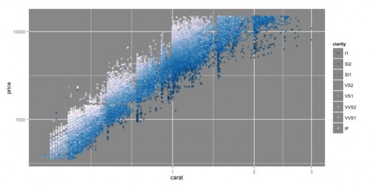
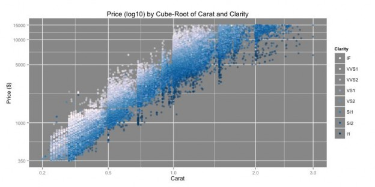
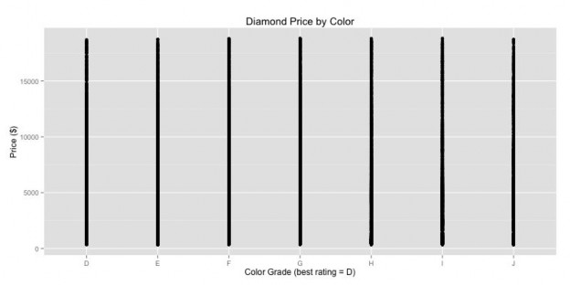
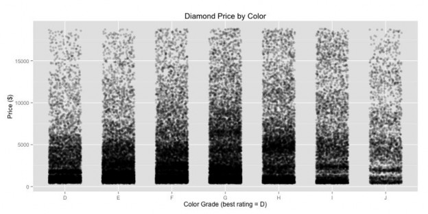
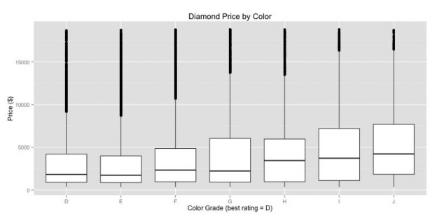
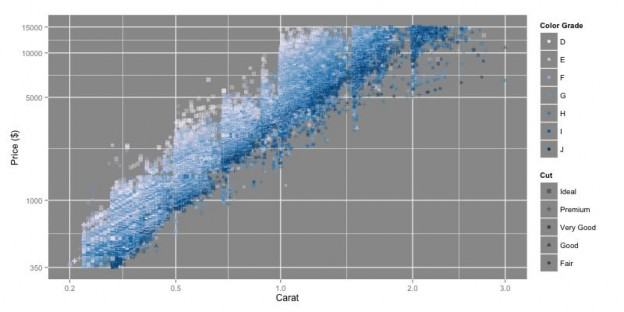
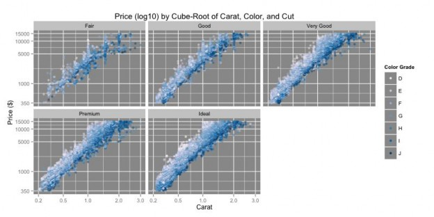
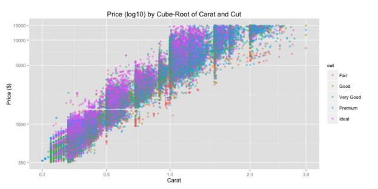
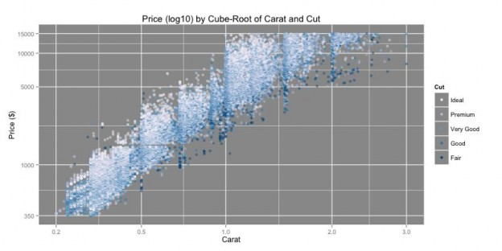

Creating Effective Plots
Titles, Labels, and Legends
Variable Types Determine Plot Types Beware of Information Overload
Use of Color as a Visual Encoding
Creating plots that are efficient and effective is important for two major reasons. Firstly, when demonstrating your results to others, an effective plot will convey the results you want to present and provide an easytofollow story to the observer. Secondly, when you are performing the initial exploration, an appropriate plot will allow you to understand patterns or trends in the data, saving you time in following the trails that bring you to the most interesting results. This document is meant to provide some tips in the creation of effective plots to further both goals.
Titles, Labels, and Legends
It will help others understand your plots when they are properly annotated. Have an informative, but succinct title on your plots. Similarly, for plots meant to be read by others, have descriptive axis labels and legends when you have third variables to plot. Make sure that you have a sufficient number of axis lines for the reader to understand the scale of the data being plotted.


Variable Types Determine Plot Types
It is important to consider the values that a variable takes when electing how it should be plotted. There are a number of different variable types to consider, including nominal
(categorical variable whose factor levels have no inherent ordering), ordinal (categorical variable whose factor levels have a natural inherent order), discrete quantitative (variable that takes numerical values with a fixed number of values), and continuous quantitative (variable that takes numerical values to arbitrary precision). Plots and visual elements that work well for quantitative variables may need to be modified or changed for if categorical variables are used instead.
Example: When you are plotting two variables against one another, a straight scatterplot is not necessarily the best option, even if both variables are quantitative in nature. If one of the variables takes only discrete values, then it may be appropriate to introduce jitter in point positions along that axis to spread the data. The gives a better idea of the variable’s density. Alternatively, we may want to use a different plot instead of a scatterplot. If one of the variables is nonnumeric, then a scatterplot doesn’t make much sense. Instead, a box plot, violin plot, density plot, or bar graph will be a more effective data representation.



Beware of Information Overload
Simply because you can add additional aesthetic features to a plot does not mean that you should. A careful balance in terms of visual elements should be used to keep your plots interpretable.
Think very carefully before you let points in your plot represent more than three variables. Each point in a plot will typically contain information about two variables from its x and y position with additional variables contained in other visual encodings (color, shape, size, etc.). If a single
point contains multiple nonpositional encodings, the plot may contain too much information that patterns and trends are not easy to spot. It is better to make multiple simpler plots than it is to try and fit everything into a single plot.
Be careful about redundant information as well. For example, if a variable is being plotted on one axis, think if you need to show that information again by adding a visual encoding such as color for emphasis. Having a legend match color to axis labels or position is an example of redundancy. While “double encoding” a variable can provide emphasis to demonstrate a variable’s importance, there is potential for information overload or confusion. In some cases, simpler graphics are be better. If you don’t need a legend, then don’t use one. Readers can focus on the main data display and any relevant labels rather than having the cognitive overhead of processing the legend and having their eyes jump from the legend to the data.


Use of Color as a Visual Encoding
Color is a very common visual encoding for third variables in plots. R has multiple color options, especially when using ColorBrewer. Be sure to use a color set that is appropriate for the
variable type being encoded by the color scheme. There are three types of color schemes available: qualitative (use the type = “qual” option with ColorBrewerrelated functions), sequential (type = “seq”), and diverging (type = “div”).
Use a qualitative color scheme when you are plotting a nominal variable. Subsequent levels in a qualitative color palette tend to vary greatly in hues to emphasize that levels are not related to one another. When we make a plot using a qualitative palette, we don’t expect to see a color trend across factor levels, but we may see that certain levels cluster in interesting ways that help us identify interesting patterns.
For variables that follow an ordering, either ordinal or quantitative, we will prefer a sequential or diverging color scheme. Each is used in different ways. Most of the time, a sequential color palette is most appropriate: these schemes vary saturation from light to dark and sometimes along a range of hues to demonstrate values increasing along a scale. Lighter colors are used to indicate small values, while darker colors indicate large values. Alternatively, the opposite ordering may be applied for the scale, in which lighter colors indicate “better” values and darker colors “worse” values.
On the other hand, some variables have a critical center point or zero where values above the center and values below the center are important features to identify. For these, we use a diverging palette, where the central value is lightest, and values farthest from the center are darkest. Values larger than the center take one hue, while values smaller than the center tend towards a second hue.

